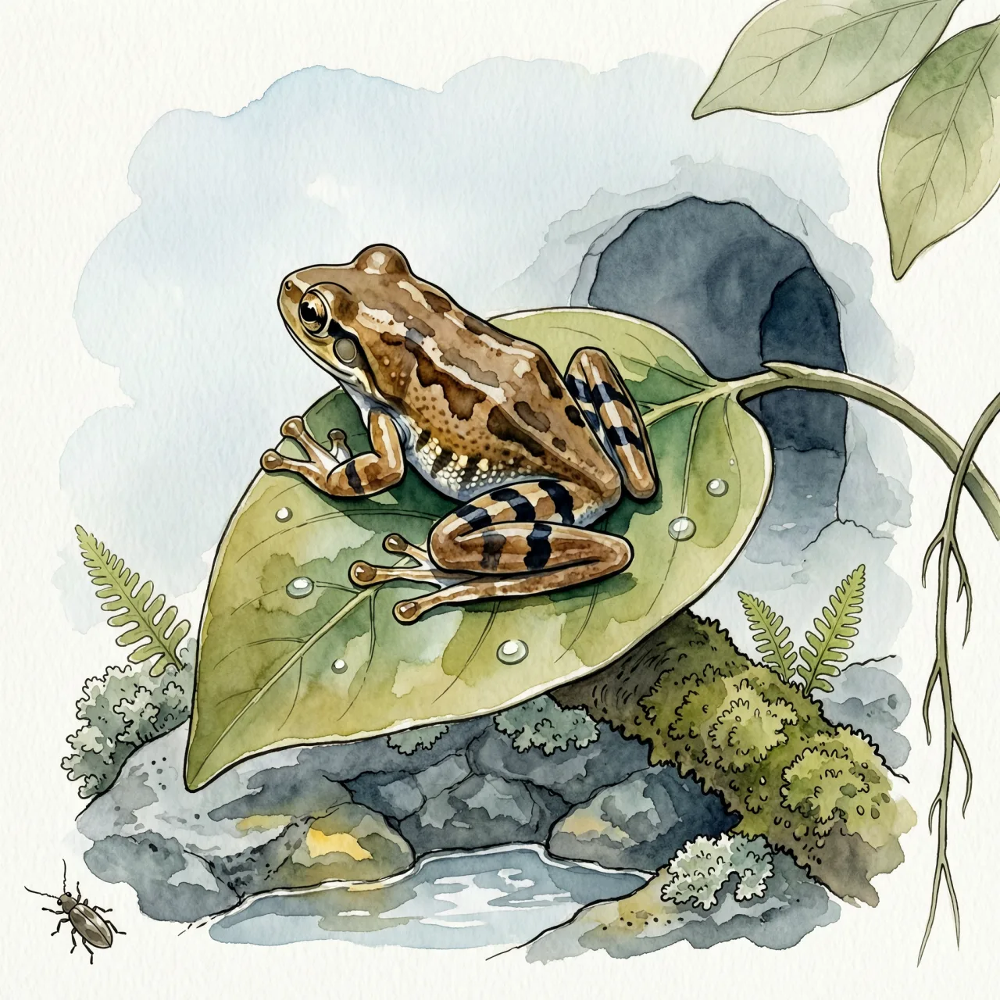
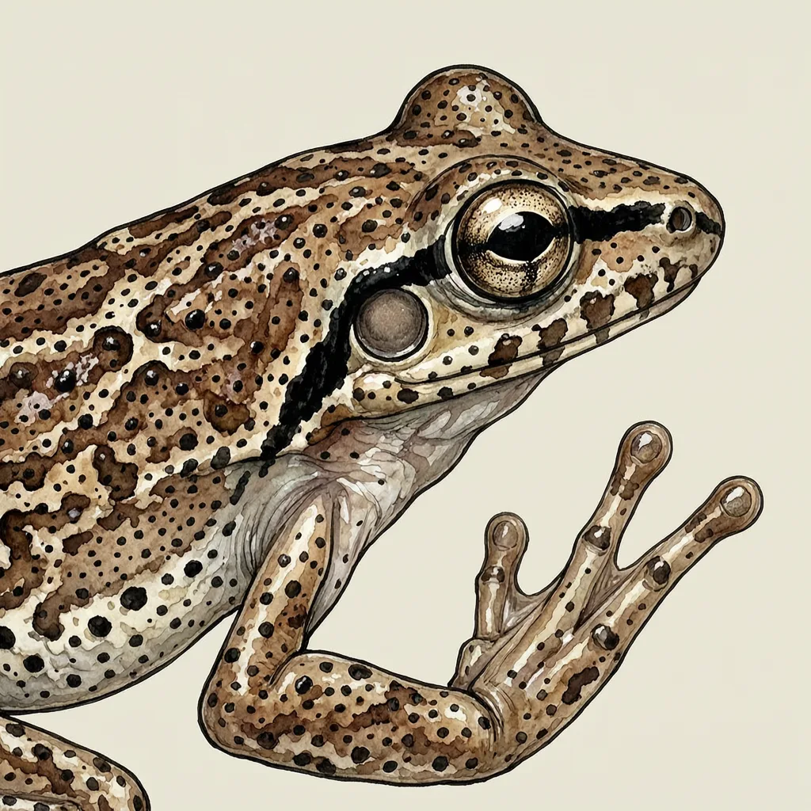

卢文氏树蛙是树蛙科刘树蛙属的物种，全球只见于香港南丫岛、大屿山、赤鱲角与蒲台岛。它是香港23种蛙类和蟾蜍中体积最细小的，雄蛙平均只有1.5厘米。1953年它被发现的山洞倒塌，一度被认为绝种，直到1984年重新出现，2004年被列入濒危。
1952年，爬虫学家约翰·卢文在南丫岛一个山洞里第一次见到卢文氏树蛙。这个物种的全球分布窄到只有香港离岸的几座岛：南丫岛、大屿山、赤鱲角和蒲台岛，出了这几处再无记录。它腹部白色、背部棕色带交叉斑纹，两眼之间横一道黑带，吻尖，鼓膜明显，全身布满痣粒；后肢细长，有多条黑色带纹，趾端有小吸盘。体型和体色都朝藏起来的方向长成。
它的第一层保护是别被发现。卢文氏树蛙是香港23种蛙类和蟾蜍中体积最细小的，雄蛙平均只有1.5厘米，雌蛙稍大，也只有2.5厘米。它的体色不显眼：棕色背部带交叉斑纹，满身痣粒，两眼之间一道黑带纹。停在原处时，卢文氏树蛙几乎完全融进自然环境，敌人难以发现它的行踪。
更意外的是它曾经消失过。1953年，卢文发现它的那个山洞倒塌，此后卢文氏树蛙被认为已经绝种，直到1984年才在南丫岛重新出现，中间隔了31年。赤鱲角原本也有它，香港国际机场施工前，岛上的个体被全数运往南丫岛。世界自然基金会曾把一些卢文氏树蛙送到墨尔本皇家动物园和柏林动物园人工繁殖，只有墨尔本成功，后代再送回香港；香港政府与嘉道理农场暨植物园在选定的八个迁地保育区释放它，渔农自然护理署从2002年起持续监察这个物种还剩多少。
